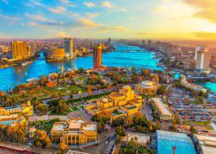
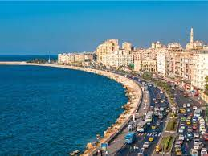
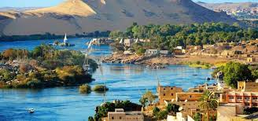

The Egyptian cities that have eyes sparkling the moment they're laid on them
Cairo

Cairo is the capital of Egypt and the city-state Cairo Governorate,
and is the country's largest city, home to 10 million people.
It is also part of the largest urban agglomeration in Africa, the Arab world and the Middle East:
The Greater Cairo metropolitan area is the 12th-largest in the world
by population with a population of over 22.1 million.
Cairo is associated with ancient Egypt, as the Giza pyramid complex and the ancient cities of Memphis
and Heliopolis are located in its geographical area.
the city first developed as Fustat following the Muslim conquest of Egypt in 641 next to
an existing ancient Roman fortress, Babylon.
Cairo was founded by the Fatimid dynasty in 969 AD. .
It later superseded Fustat as the main urban centre during the Ayyubid and Mamluk periods (12th–16th centuries).
Cairo has long been a centre of the region's political and cultural life,
and is titled "the city of a thousand minarets" for its preponderance of Islamic architecture.
Cairo's historic center was awarded World Heritage Site status in 1979.

Giza

Giza is the third-largest city in Egypt by area after Cairo and Alexandria,
and fourth-largest city in Africa by population after Kinshasa, Lagos, and Cairo.
It is the capital of Giza Governorate with a total population of 4,872,448 in the 2017 census.
It is located on the west bank of the Nile opposite central Cairo, and is a part of the Greater Cairo metropolis.
Giza lies less than 30 km (18.64 mi) north of Memphis which was the capital city of the unified Egyptian state
during the reign of pharaoh Narmer, roughly 3100 BC.
Giza is most famous as the location of the Giza Plateau, the site of some of the most impressive
ancient monuments in the world,
including a complex of ancient Egyptian royal mortuary and sacred structures, among which are the Great Sphinx,
the Great Pyramid of Giza,
and a number of other large pyramids and temples.
Giza has always been a focal point in Egypt's history due to its location close to Memphis, the ancient pharaonic capital of the Old Kingdom.
Alexandria

Alexandria is the second largest city in Egypt and the largest city on the Mediterranean coast.
It lies at the western edge of the Nile River delta.
Founded in 331 BC by Alexander the Great,
Alexandria grew rapidly and became a major centre of Hellenic civilization, eventually replacing Memphis
in present-day Greater Cairo, as Egypt's capital. Called the "Bride of the Mediterranean" internationally
Alexandria is a popular tourist destination and an important industrial centre due to its
natural gas and oil pipelines from Suez.
Luxor

Luxor is a city in Upper Egypt, which includes the site of the Ancient Egyptian city of Thebes.
Luxor had a population of 1,333,309 in 2020,
with an area of approximately 417 km2 (161 sq mi)
and is the capital of the Luxor Governorate.
It is among the oldest inhabited cities in the world.
Luxor has frequently been characterized as the "world's greatest open-air museum",
as the ruins of the Egyptian temple complexes at Karnak and Luxor stand within the modern city.
Immediately opposite, across the River Nile, lie the monuments,
temples and tombs of the west bank Theban Necropolis, which includes the Valley of the Kings and Valley of the Queens.
Thousands of tourists from all around the world arrive annually to visit Luxor's monuments,
contributing greatly to the economy of the modern city.
Aswan

Aswan is a busy market and tourist centre located just north of the Aswan Dam on the east bank of the Nile
at the first cataract.
The modern city has expanded and includes the formerly separate community on the island of Elephantine.
Aswan includes five monuments within the UNESCO World Heritage Site of the Nubian Monuments from Abu Simbel
to Philae,
these are the Old and Middle Kingdom tombs of Qubbet el-Hawa, the town of Elephantine,
the stone quarries and Unfinished Obelisk, the Monastery of St. Simeon and the Fatimid Cemetery.
he city's Nubian Museum is an important archaeological center,
containing finds from the International Campaign to Save the Monuments of Nubia before the Aswan Dam flooded
all of Lower Nubia.